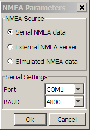

GPS Data are output from GPS Receivers in National Marine Electronics Association (NMEA) format. NMEA format Data are also output by many other ships instruments, such as wind instruments and echo sounder and also by AIS (Automatic Ship Identification) systems.
NMEA is a standard specification for interface and data exchange between marine instruments. It allows ship's instruments to "talk to" each other and to computers. A good source for more detailed information is http://en.wikipedia.org/wiki/NMEA_0183
NMEA Data are generally sent in RS-232 protocols and can be input to a computer via a serial port. If your computer does not have a serial port (nowadays few laptops do), then it's generally possible to use a serial to USB to serial converter.
GPS data are fundamental to PAMGuard in addition, several other useful data sources which may be useful to PAMGuard may be available in an NMEA data string and several PAMGuard module may need to access NMEA data. Thus, PAMGuard has a module for accessing NMEA data and an additional module for GPS Processing which is dependent on an NMEA Acquisition module.
To add a new NMEA Data Collection module to PAMGuard, select the File->Maps and Mapping->NMEA Data Collection menu item.
From the Detection Menu, select NMEA Data Collection>NMEA Parameters …

There are two ways of reading NMEA data into PAMGuard
This is by far the easiest and most sensible way of getting NMEA data into PAMGuard.
At present, Java does not provide direct serial port access. However, PAMGuard provides cross platform support for serial ports through the RXTX library.
In the NMEA Parameters dialog, select Serial NMEA data.
Then, select the COM port that your NMEA equipment is plugged into and the correct baud rate.
The standard baud rate for GPS is 4800 bps.
The standard baud rate for AIS is 38400 bps.
Some NMEA multiplexing devices may also use other baud rates. Refer to the equipment manual.
An alternative to direct control of the serial port is to use an external NMEA server program which will read the serial port and send NMEA data to PAMGuard using a network protocol (UDP). This method is only ever used when also working with the IFAW Logger Software. The IFAW NMEA server software, which is bundled with the IFAW Logger software can simultaneously output NMEA data to both PAMGuard and to Logger. With either server, the UDP Port number in PAMGuard must match that in the NMEA server.
PAMGuard can also simulate NMEA GPS and AIS data. This is useful during training and setting up exercises. GPS Data are simulated according to a user defined start position, course and speed. AIS data are sampled from data collected in the English channel.
To verify the NMEA data source, select Detection>NMEA Data Collection>NMEA Strings …
This will show the NMEA Strings List Dialogue, an example of which is below.
This dialogue shows the current NMEA strings being acquired by PAMGuard. The update time and string ID are also shown. In the example above, a GPRMC string has been acquired.
The "Last update" time should update according to the time and date on your GPS receiver, or the simulated date if in simulation mode. If this is not the case, please check all cables and connections and re-try. If using the NMEA Server utility, check that the NMEA output strings are updating.
Setting up NMEA isn't always as straight forward as it might be.
Some information on making connections to an NMEA signal can be found here.
Some troubleshooting FAQ's and solutions are here.